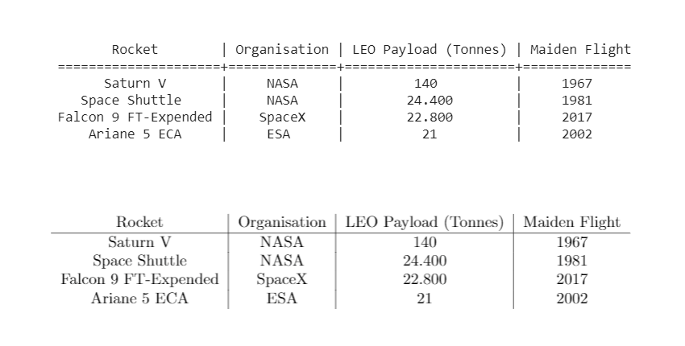

Projects
Github, Joseph Early
LatexTable - A Python library for creating Latex tables (20 Jun 2020)
Texttable is a Python package that can create simple ASCII tables. This package extends its functionality to allow the table to be directly output in Latex, removing the tedious copy and paste chore. The Latex output matches the table design, and there are utilities for adding table captions and labels.